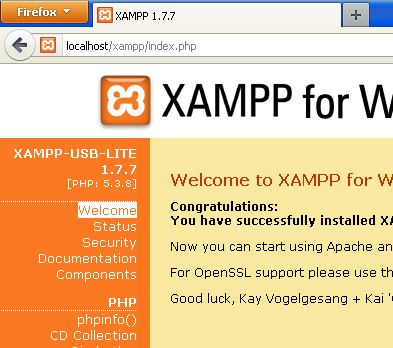

Table Of ContentsPrevious topicNext topicThis Page |
Instalação no XAMPP¶XAMPP é uma distribuição Apache fácil de instalar contendo MySQL, PHP e Perl. Uma vez feito o download do XAMPP, tudo que você precisa fazer é extrair-lo e começar a usa-lo. Abaixo existem instruções detalhadas de como instalar o Phalcon no XAMPP para o Windows. É fortemente recomendável utilizar a última versão do XAMPP. Download da versão certa do Phalcon¶XAMPP sempre é lançado para versões 32 bit do Apache e do PHP. Você precisará fazer o download da versão x86 do Phalcon para o Windows, na seção de download. Após o download da biblioteca do Phalcon, você terá um arquivo zip como o da figura abaixo: 
Extraia a biblioteca DLL do phalcon do arquivo zip: 
Copie o arquivo php_phalcon.dll para o diretório de extensões do PHP. Se você tiver o XAMPP instalado no c:\xampp, a extensão precisa estar no c:\xampp\php\ext. 
Edite o arquivo php.ini localizado no diretório C:\xampp\php\php.ini. Esse arquivo pode ser editado com o Notepad ou outro programa similar. Nós recomendamos o Notepad++ para evitar problemas com caracteres de controle de final de linha. Acrescente no final do arquivo a seguinte instrução: extension=php_phalcon.dll e salve-o. 
Reinicie o servidor web Apache diretamente do Centro de Controle do XAMPP. Desta forma irá carregar as novas configurações do PHP (a nova extensão instalada). 
Abra o browser e navegue até o endereço http://localhost. A pagina de boas vindas do XAMPP será mostrada. Clique no link phpinfo().

phpinfo() ira mostrar na tela um numero significante de informações a respeito do estado atual do PHP. Role a tela para baixo, verificando se a extensão do phalcon foi carregada corretamente. 
Se você conseguir ver o phalcon na saída do phpinfo(), parabéns! Agora você esta voando com o Phalcon. Screencast¶O seguinte screencast é um guia passo-a-passo para instalação do Phalcon no Windows: Guias Relacionados¶ |